Weaver 任务看板「新」标签与置顶 · 浏览器验收报告
- 隔离实例（端口 4795）从干净快照启动，夹具没有触发任何真实引擎执行（54 个任务：native 35、mock-jsonl 8、未派发 11）。
- 「新」标签、置顶区、手动置顶、换列、已结束折叠、「查看全部 N」、桌面与 390px 均已用真实浏览器操作取证；不刷新页面等待 2 分钟后「新」与自动置顶在到期后约 50ms 内全部消失。
- 修正：多张手动置顶时间戳相同导致顺序不确定；置顶区与普通分组边界不清；整卡右侧留白造成无谓换行；触屏下置顶按钮不可达；已置顶卡片常显斜杠图钉、状态表达反了（父 Agent 复核后追加，问题 5）。
- tests/renderer：工作树 486/486 通过，快照 456/456 通过，快照
tsc --noEmit退出码 0。 - 未验证：暗色主题（产品仅亮色）、真实触屏手势、样式调整后未重跑 Tab 序列、工作树整体 tsc。详见「未验证与风险」。
- 上一轮事故（误写共享策略）已写入下文，本轮全程隔离，未对共享服务执行任何命令。
1. 上一轮事故与本轮隔离措施
事故（上一轮 opencode，任务 95901f74）：在快照目录执行 npx tsx src/cli/main.ts policy save --input <夹具策略> 时没有带 --data-dir。CLI 按默认数据目录找到共享 Weaver 服务（端口 4737），把共享策略覆盖成夹具策略（返回修订 99，夹具里只有 claude 引擎与 fixture_owner/fixture_worker）。
原因：CLI 的数据目录默认取 $XDG_DATA_HOME/weaver 或 ~/.local/share/weaver，漏写 --data-dir 就连到了共享服务；写之前也没有用 policy get 确认目标实例。
处置：父 Agent 在用户同意后已把共享策略回滚到修订 100。证据保留在 incident/policy-save.json 与 incident/policy-save.out（上一轮现场原样复制）。
本轮采取的隔离措施与核对证据
- 包装脚本：所有 weaver CLI 调用都经同一个包装脚本，脚本固定
export XDG_DATA_HOME=<临时根>/xdg并在每条命令末尾追加--data-dir <临时根>/data；没有绕过它直接调用过 CLI。npm 回显的实际命令行均带--data-dir（如…policy get --output json --data-dir /tmp/weaver-worker-cap.r5XK/board-pin-browser/data）。 - 写前核对：第一次写操作前先
policy get，返回修订 0、7 个引擎（claude、codex、grok、opencode、pi、qoder、zcode），与共享服务的「修订 100、6 个引擎」明显不同，确认来自临时实例（evidence/policy-initial-isolated-instance.json）。之后每次policy save前都再policy get取当前修订；保存返回修订 1、2，不是共享服务会给出的 101+。 - 数据目录：新建（权限 0700），没有复用上一轮的 wd；服务只监听 127.0.0.1:4795，数据目录在临时根内。
- 未触碰共享服务：本轮没有对默认数据目录、端口 4737 做任何读写（连只读的 policy get 也没有发给它）。我无法从共享服务侧再核对它此刻的修订，需要时由父 Agent 复核应仍为 100。
2. 被测环境与夹具
- 快照：
git archive HEAD（当时 HEAD 为 82547de）导出到临时根，node_modules符号链接到工作区。随后只复制 9 个文件：task-pins.ts、task-persistence.ts、task-columns.ts、TaskBoard.tsx、task-style.ts、tag-colors.ts与 3 个 renderer 测试。其余 198 个 src/package.json 文件逐一对照与 82547de 相同；导出之后才提交的 zcode 移除（76ba062）与 workers unblock（defb4f1、485b042）不在快照中。对照结果见 evidence/snapshot-vs-worktree.txt。 - 实例：
weaver web --dev --no-open --port 4795 --data-dir …/data，由systemd-run --user --scope --collect --unit=dev-weaver-pins-61adaee6 -p MemoryHigh=8G -p MemoryMax=10G启动（vite dev 模式）。 - 策略：修订 1 只保留 claude 引擎、
fixture_owner（max_parallel12，修订 2 升到 40 以容纳 20+ 进行中任务）、fixture_worker，关闭额度自动刷新（rev1 请求体、rev2 请求体）。 - 夹具：3 个工作目录（alpha、beta、gamma）。共 54 个任务，清单见 evidence/fixtures-tasks.tsv：待执行草稿、进行中（native 挂起，未汇报）、待验收（mock-jsonl 完成）、已通过（mock + 评审通过）、已取消。旧任务 33 个，createdAt/updatedAt 在服务停机时直接改写临时库回溯到约 26 小时前，其中 7 个已完成/已取消任务的 updatedAt 之后又在运行中改为 2 至 9 小时前，让它们留在看板而不进归档；进行中旧任务 23 个（超过 20）。新任务按需在页面打开时分批创建，用于「新」窗口取证。卡片页脚里的「派发/上报于」时间是真实当前时间，只有 createdAt/updatedAt 被回溯。
- 真实执行确认：临时库审计显示 54 个任务的执行方式为 native 35、mock-jsonl 8、无 11（未派发），没有 real；策略里只有 claude 引擎，而 claude 的真实执行在 Weaver 里是 deferred，无法拉起进程。上次验收误触发过一次真实 codex，本轮没有再发生（evidence/ev-20-execution-audit.txt）。
- 浏览器：agent-browser 任务模式，独立 profile 与 session
weaver-pins-61adaee6。桌面用 1440×900 并以--blink-settings=primaryHoverType=2启动让无头 Chrome 具备 hover 能力（默认无头 Chrome 的(hover: none)为真，会把触屏分支误当桌面）；窄屏用 390×844 与默认无头（hover: none）。
3. 逐条验收结果
| 验收标准 | 结论 | 要点与证据 |
|---|---|---|
| 1. 隔离实例从快照启动，夹具未触发真实引擎并在报告确认 | 通过 | 快照与工作树/82547de 对照见 snapshot-vs-worktree.txt；执行方式审计见 ev-20：native 35、mock-jsonl 8、无 11、real 0。 |
| 2a. 「新」Tag、列顶置顶区、区头计数、目录组头、不重复、列头总数不变 | 通过 | 待执行 5 = 置顶 2 + 普通 3；执行中 25 = 置顶 2 + 普通 23；待验收 4 = 置顶 1 + 普通 3（DOM）。置顶区先出「置顶 · N」，再按目录出组头，卡片标题行最前是「新」Tag，普通分组不再出现这些卡片。截图 02、15。 |
| 2b. 不刷新等待超过 2 分钟后自动消失 | 通过 | 第一轮：创建 08:22:28.905–.923Z，MutationObserver 记录 08:24:28.954Z 起「新」5→4→…→0（最早到期后 49ms），期间 navigation entries 恒为 1，页面未刷新。修正后又做一轮：创建 08:32:57.5Z，08:34:57.562–.713Z 5→0。前后截图 03/04、16/17，日志 ev-04、ev-12。 |
| 3a. 悬停与键盘可达 | 通过 | 空闲 opacity 0 / pointer-events none，悬停后 opacity 1（05）；焦点在卡片上按一次 Tab 到置顶按钮，opacity 1 且有焦点环（07）。 |
| 3b. aria-pressed / aria-label，点击不打开详情 | 通过 | 置顶后 aria-pressed=true、aria-label=取消置顶；真实鼠标点置顶按钮详情未打开，点卡片则打开详情（对照，ev-15 pin、ev-15 card）。 |
| 3c. 多张手动置顶按置顶时间倒序 | 发现缺陷，已修正 | 修正前两张相隔约 1.5 秒的置顶得到相同时间戳；修正后严格递增，列内顺序 探针-执行 → 旧任务-执行-B5 → 旧任务-执行-B3（06，见问题 1）。 |
| 3d. 刷新后保留、取消后回到普通分组 | 通过 | 重载后 weaver-task-pins 三条原样（ev-06、08）；取消后条目移除，卡片回普通分组，「查看全部」22→23（ev-08）。 |
| 3e. 换列后仍置顶 | 通过 | 置顶的 native 任务经 workers complete 进入待验收，仍在待验收置顶区（09、ev-07）；另一张被取消后进入已结束，展开后仍在置顶区（10、22）。 |
| 4a. 已结束列折叠不被置顶/新任务展开 | 通过 | 已结束里有新任务与手动置顶时 data-collapsed=true、挂载卡片 0 张；展开后「置顶 · 1」正常（22）。 |
| 4b. 「查看全部 N」只计普通分组 | 通过 | 执行中 29 = 置顶 2 + 普通 27，按钮「查看全部 27」，置顶区 2 张全部显示；展开后变「收起」，列头仍 29（21、before、after）。 |
| 4c. 桌面与 390px：不遮挡、不错位 | 通过（经修正） | 逐卡测量置顶按钮与卡内全部文字、图标矩形：桌面 22 张、窄屏 26 张均无交叠（桌面、窄屏）；390px 下 scrollWidth = clientWidth = 390；「新」为 magenta（rgb 163,36,102），与蓝色「执行中」、橙色「待验收」、灰色「草稿」、青色免费渠道可区分。区头与组头的区分经修正后才合格（问题 2）。 |
| 4d. 控制台无错误 | 通过（带说明） | 看板加载、置顶/取消、折叠/展开、查看全部全程只有 vite 与 React DevTools 的 debug/info，无 error/warn、无页面异常（ev-19）。仅在打开「任务详情」抽屉时出现 React 19 element.ref 弃用报错，把 5 个看板文件换回 HEAD 版本后同样出现（带功能、HEAD），不是本功能引入。 |
| 5. 问题已修正复验，源码与测试同步，tests/renderer 全部通过 | 通过 | 见第 4、6 节。工作树 486/486，快照 456/456。 |
| 6. 交付物与清理 | 通过 | REPORT.html、checks.json、cleanup.json 在本目录；scope unit 已停止、浏览器已关闭、临时数据与快照已删除（第 7 节）。 |


4. 发现的问题与修正
问题 1 多张手动置顶时间戳相同，倒序不确定 已修正
现象：连续手动置顶三张卡，localStorage 里两张的时间是同一个值：{"68663b1f…":1792571115994,"28fb246d…":1792571131003,"13639270…":1792571131003}（修正前）。第二、三张相隔约 1.5 秒，却同值，列内顺序就只能靠排序稳定性。
原因：onTogglePin 用的是看板的 boardNow，这是页面渲染时递下来的时钟，两次数据刷新之间不会前进。
修正：task-pins.ts 新增 nextPinTime(pins, renderNow, wallNow)，取墙钟、渲染时钟与「已有最新置顶 + 1」的最大值，严格递增；TaskBoard.tsx 的 onTogglePin 改用它；renderer-board-pins.test.ts 增加覆盖。复验：重新置顶后三个时间戳 1792571189814 < 1792571191502 < 1792571193201（修正后），顺序正确（06）。
问题 2 置顶区与普通分组边界不清 已修正
现象：区头「置顶 · N」是三级灰字，比目录组头还淡；置顶区里的「beta 1」与紧随其后普通分组的「beta 1」之间没有任何分隔，读起来像同一目录重复出现（待验收列最明显）。
修正：区头改为正文色加粗，Pin 图标用主色；置顶区之后的第一个普通组头带 afterZone 标记，渲染一条虚线 role="separator"。首版曾新增 zoneEnd 行类型，导致不可写的 tests/renderer/renderer-virtual.test.ts:54 在 tsc 下报 TS2339，因此改为组头标记，不改变行类型联合。文件：task-columns.ts、TaskBoard.tsx、task-style.ts、测试。
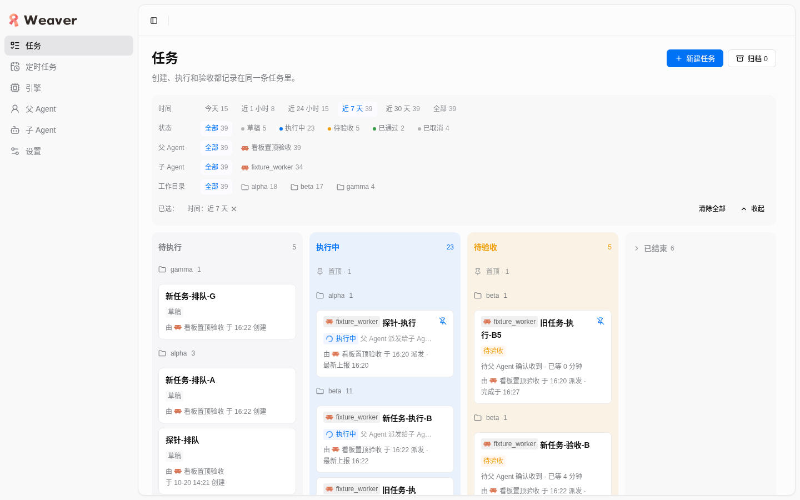

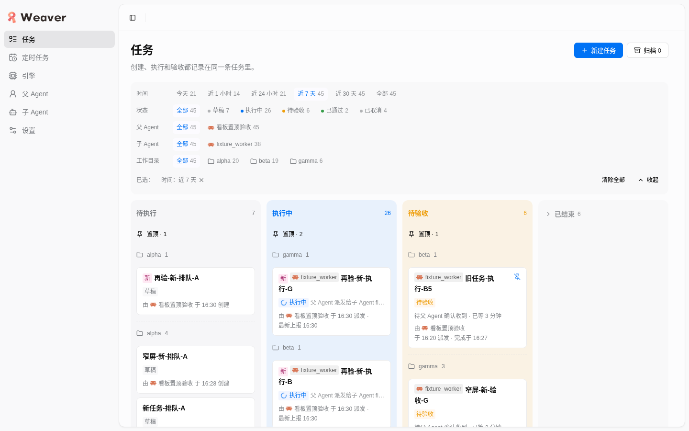
问题 3 整卡 36px 右侧留白造成无谓换行 已修正
现象：为让出置顶按钮，整张卡右侧内边距加到 36px，390px 下「待父 Agent 确认收到 · 已等 1 分钟」折成「…已等 1 / 分钟」两行，页脚也更挤。
修正：置顶按钮只占卡片右上角的第一行，所以把内边距还原为 12px，仅给标题行 cardTitle 加 padding-inline-end: 24px。复验：状态行与页脚恢复全宽；逐卡矩形测量无交叠。


问题 4 触屏（无 hover）下置顶按钮不可达 已修正
现象：按钮只在悬停或键盘焦点时显示，且 pointer-events: none，没有 hover 的设备上无法手动置顶。
修正：pinButton 增加 @media (hover: none)，未置顶时以 0.7 不透明度常显并可点击。复验：无头 Chrome 默认 (hover: none)，390px 下全部卡片的按钮 opacity 0.7、pointer-events auto（18）；带 primaryHoverType=2 的桌面模式下空闲 opacity 仍为 0。限制：只验证了媒体特性分支，没有真实触屏手势。

问题 5 已置顶卡片常显带斜杠的图钉，状态表达反了 已修正
来源：父 Agent 复核意见。已置顶时按钮常显 PinOff（带斜杠的图钉），用户会读成「没有置顶」或「置顶被禁用」。
修正：按钮内同时渲染两个图标容器：已置顶时常显主色实心 Pin（fill: currentColor），悬停或键盘聚焦这个按钮时才换成 PinOff，提示点击会取消；未置顶时只有 Pin，行为不变；aria-pressed、aria-label 不变。改动文件：TaskBoard.tsx、task-style.ts（新增 pinGlyph、pinButton 的图标切换规则）、renderer-board-pins.test.ts 的对应断言（常显 Pin、PinOff 只作为第二个图标、未置顶没有 PinOff）。
复验：重新起了隔离实例（沿用全部隔离措施：包装脚本、XDG_DATA_HOME、每条命令 --data-dir、写前 policy get 为修订 0 而非共享的 100；夹具 4 个任务，native 2、未派发 2，无真实执行）。读数：已置顶空闲时 Pin 显示且填充色 rgb(0,114,245)、PinOff display:none；悬停与键盘聚焦时 Pin 隐藏、PinOff 显示；未置顶卡片空闲 opacity 0、没有 PinOff（idle、hover、focus）。tests/renderer 全量 486/486 通过，renderer-board-pins 19/19。

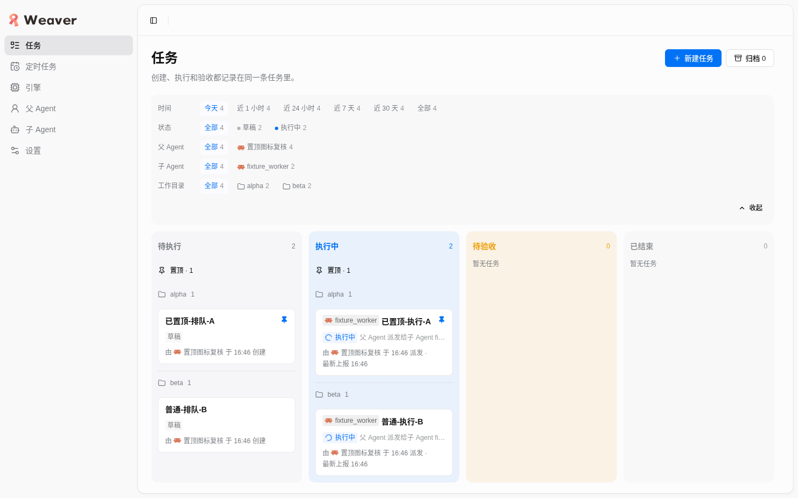

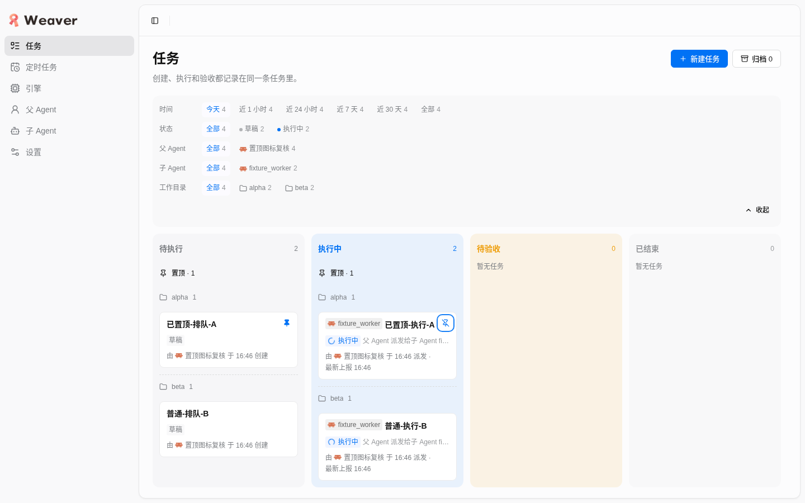
此前报告中 06、08、09、10、13 等截图是改前的 PinOff 样式，保留作修正前记录。
5. 分步证据
夹具与「新」窗口（步骤 1–3）
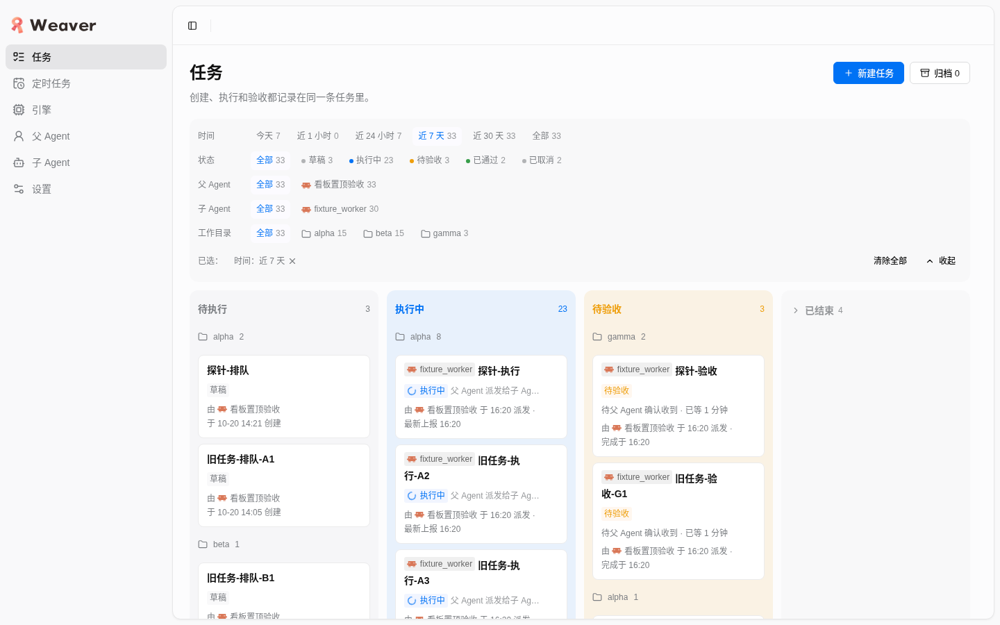
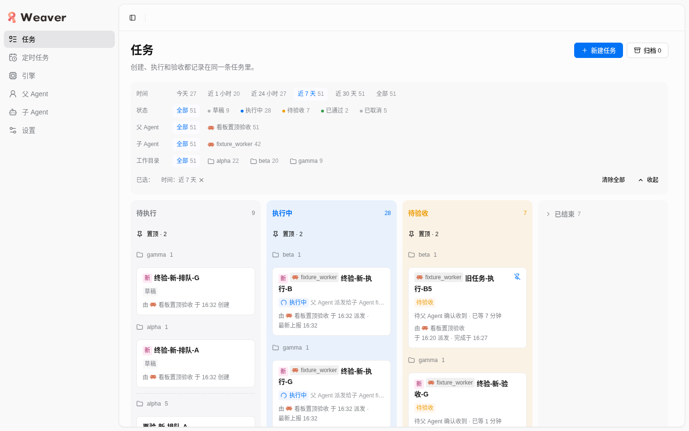
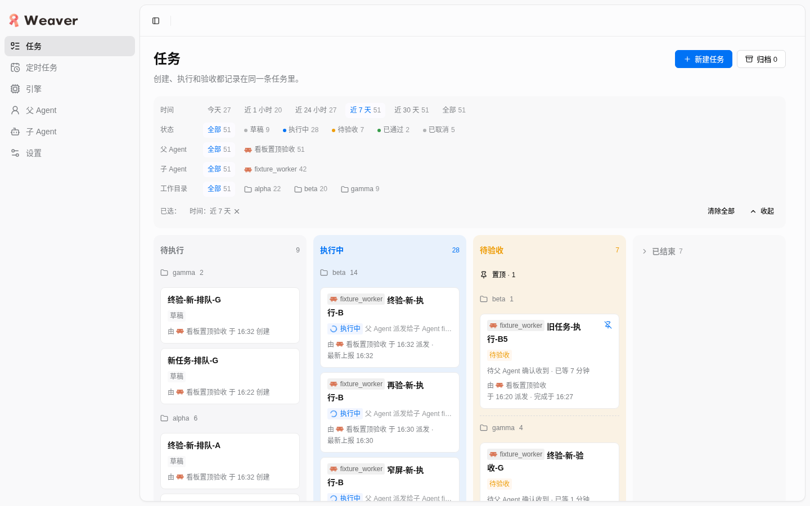
第一轮到期前后截图（修正前版本）
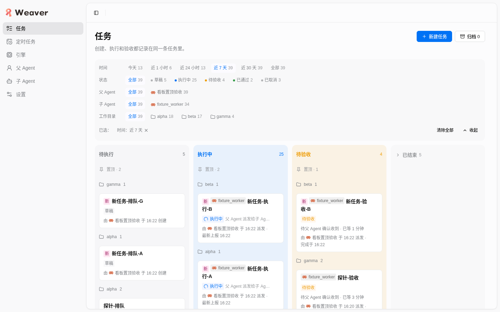
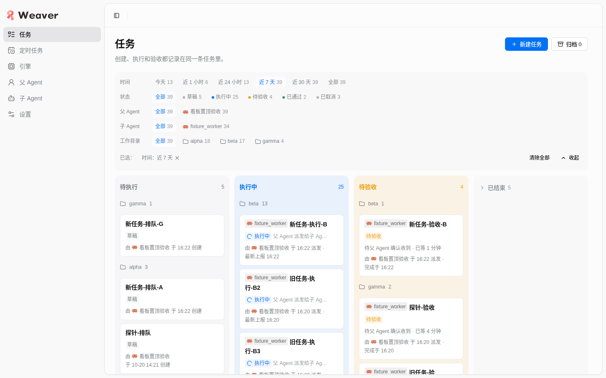
手动置顶（步骤 4–5）
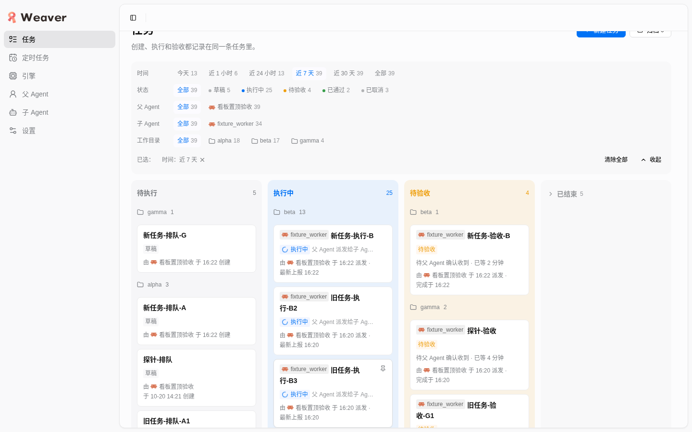
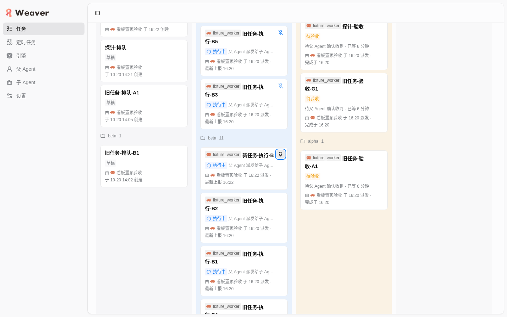
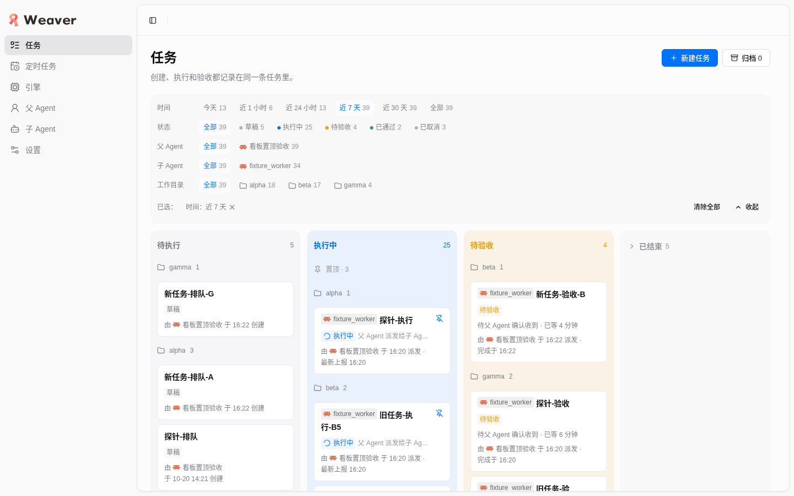


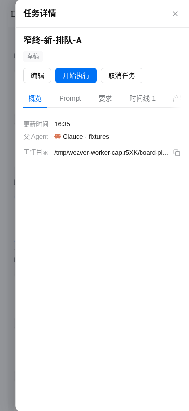
已结束折叠与「查看全部」（步骤 6）
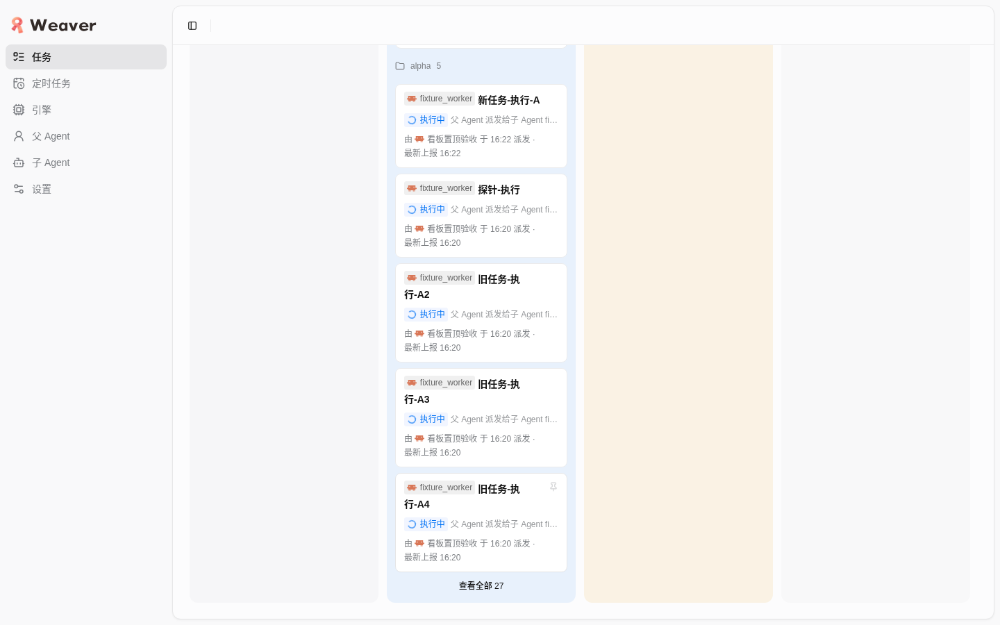
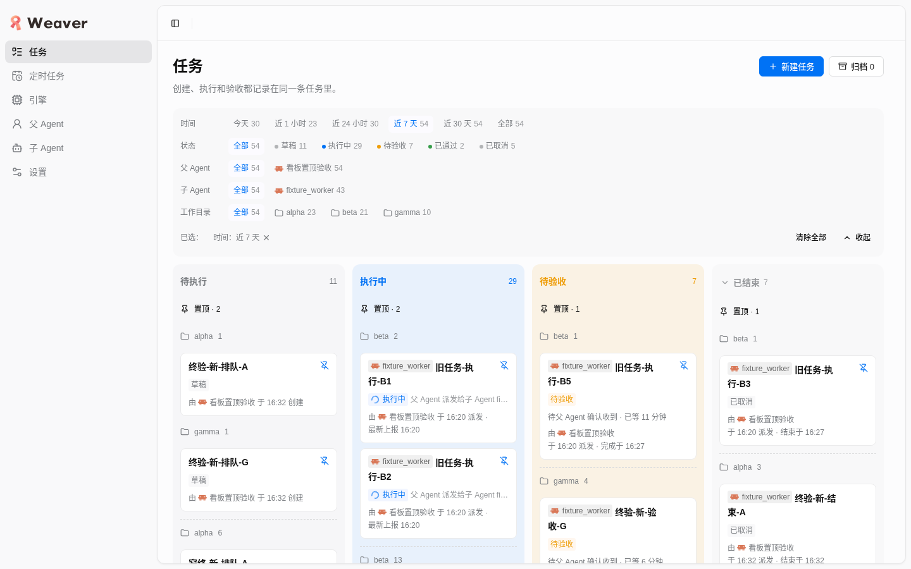
桌面与窄屏视觉（步骤 7）

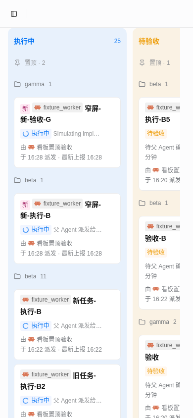
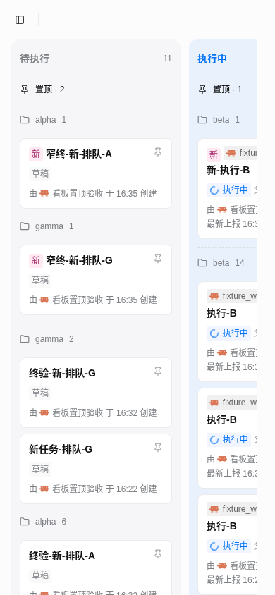
DOM 与测量证据：ev-12 到期前 DOM、到期后 DOM、ev-18 已结束展开、ev-14 窄屏宽度。DOM 提取脚本 dom.js 与交叠测量脚本 overlap.js 一并保留。
6. 运行的验证命令
| 命令 | 位置 | 结果 |
|---|---|---|
node --import tsx --test tests/renderer/renderer-board-pins.test.ts | 工作树 | 19 通过 / 0 失败（修正前为 17，新增置顶时刻与分隔标记两个用例） |
node --import tsx --test tests/renderer/*.test.ts | 工作树 | 486 通过 / 0 失败 |
node --import tsx --test tests/renderer/*.test.ts | 快照 | 456 通过 / 0 失败（快照基于 82547de，用例数较少） |
npx --no-install tsc --noEmit -p tsconfig.json | 快照 | 退出码 0。首版 zoneEnd 行类型曾使 tests/renderer/renderer-virtual.test.ts:54 报 TS2339，改为 afterZone 标记后消除 |
node --import tsx --test tests/renderer/*.test.ts（图标修正后） | 工作树 | 486 通过 / 0 失败；renderer-board-pins 19 通过 / 0 失败 |
浏览器验收的每一步命令与读数保存在 evidence/。关于测试先行：问题 1 先在浏览器里复现（时间戳相同）再修正，对应单测在修正后补入，不是严格的先红后绿；其余修正以截图与逐卡测量复验。
本轮对源码与测试的修改（均在工作树，未提交）：src/renderer/features/tasks/task-pins.ts（nextPinTime）、TaskBoard.tsx（onTogglePin、置顶区与分隔标记渲染）、task-columns.ts（BoardRow.afterZone、afterZone()）、task-style.ts（pinnedHeading、pinnedEnd、cardTitle 留白、pinButton 的 hover: none）、tests/renderer/renderer-board-pins.test.ts。其他文件未改。
7. 清理
- scope unit
dev-weaver-pins-61adaee6.scope已停止，systemctl --user status返回 could not be found；端口 4795 已无监听。 agent-browser close已关闭本任务 Chrome；任务 profile 用bh task-profile remove删除，目录不存在、无进程引用。- 快照、数据目录与 XDG 根、浏览器根、夹具与脚本、截图缓存、夹具工作目录、以及上一轮遗留的 fixtures/（事故证据已先复制到 incident/）均已删除；父 Agent 放在临时根里的文件未动。
- 共享 Weaver 服务（端口 4737）清理时仍在监听，本轮未对它做任何读写或启停；未执行 git commit/push/stash/checkout/reset/restore。
- 图标修正复验轮（问题 5）重新起的隔离实例、浏览器与临时数据同样已全部回收：unit 已停、端口 4795 无监听、profile 已删、临时数据与快照已删。
- 详见 cleanup.json。
8. 未验证与风险
- 暗色主题：产品仅亮色，按要求未验证。
- 真实触屏：只验证了
(hover: none)媒体特性分支下按钮可见且可点，没有真实触屏手势与点按热区实测。 - 键盘序列：Tab 到置顶按钮在样式调整前做过；调整后只重新核对了空闲/悬停状态与逐卡无交叠，没有重跑 Tab 序列（焦点相关 CSS 未改动）。
- 类型检查范围：只在快照上跑了 tsc；工作树里并行任务有半成品文件，整体 tsc 结果会受其干扰，未作为依据。
- 标题折行：标题与「新」、子 Agent 标签同行流式排列，
overflow-wrap: anywhere会在窄卡片里按字符折行（如「旧任务-执／行-B2」）。这是 HEAD 既有排版，不属于本功能，没有改动。 - 夹具真实性：旧任务的创建/更新时间是回溯的；页脚「派发/上报」时间与已等待时长是真实时间，与回溯后的时间不一致，不影响本功能判定。部分旧已完成任务的 updatedAt 在服务运行时直接写临时库，仅用于让它们留在看板，没有其他用途。
- 代理工具点击：agent-browser 用元素引用点击卡片偶尔没有命中，所以「点击不打开详情」的对照改用真实鼠标坐标（点按钮不开详情、点卡片开详情）。
- 已有警告：React 19
element.ref报错出现在任务详情抽屉，与本功能无关，建议另行处理。
9. 证据索引
| 文件 | 内容 |
|---|---|
| checks.json、cleanup.json | 机器可读的逐条结果、问题清单、命令结果、清理记录 |
| incident/ | 上一轮误写共享策略的原始请求与响应（policy-save.json、policy-save.out） |
| evidence/ | ev-03…ev-21 的 DOM、时间戳、控制台、测量、执行审计；快照对照；夹具与策略请求体；DOM/测量脚本 |
| 01–25 号 PNG | 桌面 1440×900 与窄屏 390×844 截图；02–12 为修正前版本，13–22 为修正后版本（06、08 为问题 1 修正后），23–25 为问题 5（已置顶图标）修正后 |